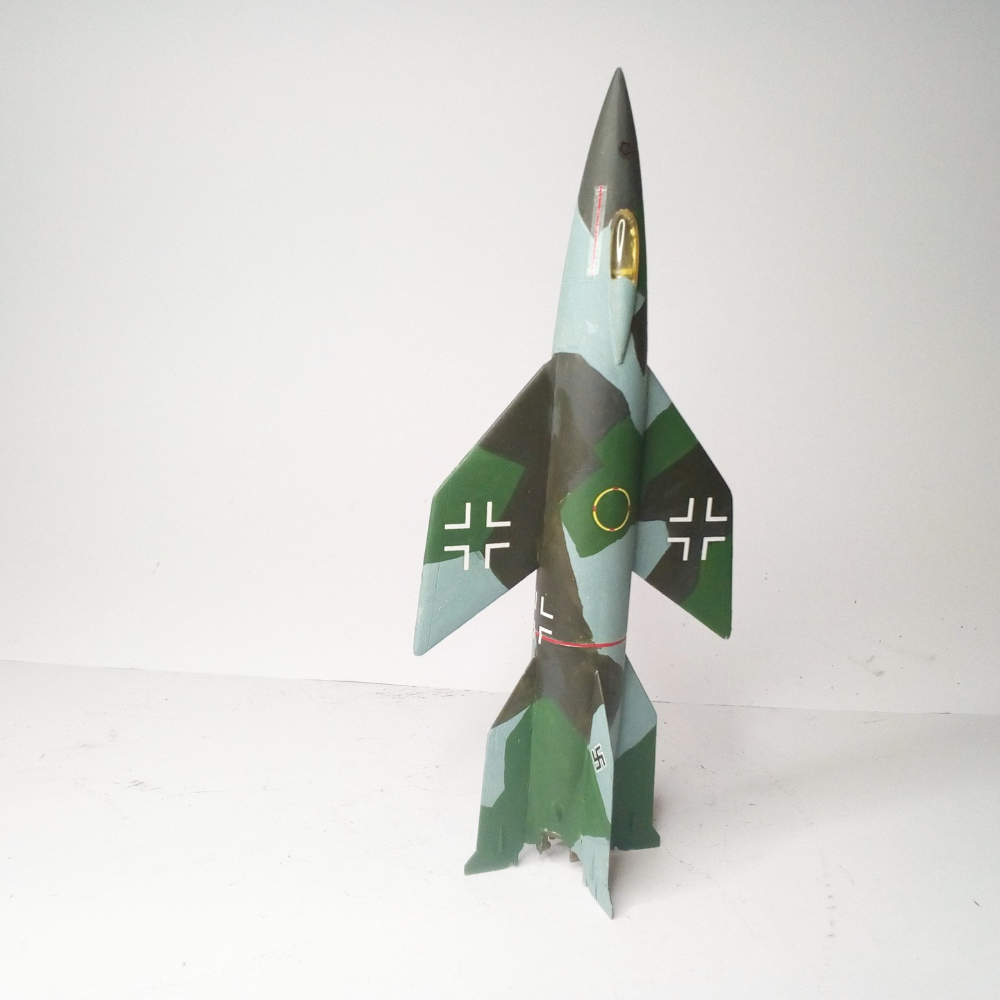
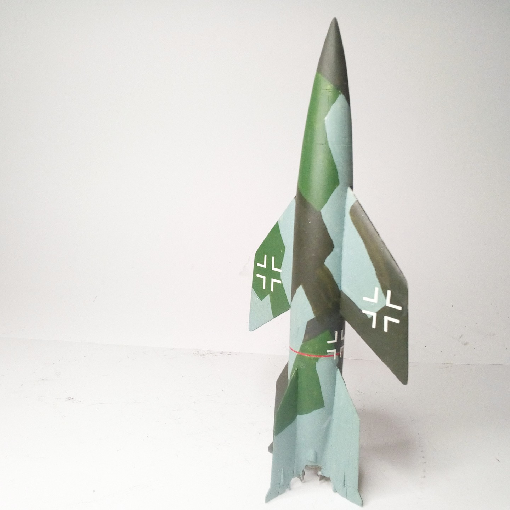

Mezzi militari · scale model archive
Manned V2 project
Manned V2 project — Kit: Special Hobby, Scale: 1/72. It would have taken the poor pilot quite some guts to fly this thing #1/72 #Special Hobby

Photo gallery

English description
It would have taken the poor pilot quite some guts to fly this thing
#1/72 #Special Hobby
Descrizione italiana
It would have taken il poor pilota piuttosto some guts una fly questo thing.
#1/72 Hobby.